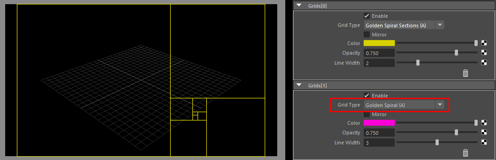

Known Issues¶
Contents of this page:
Changing the color of the “Color” attribute is not immediately reflected in the view.¶
This is a specification of the attribute editor and is caused by the screen not being refreshed immediately.
Solution
Change attributes other than color
Click the
Refreshbutton on the shelf.
Click the “Refresh the scene and UI” button in the NodeEditor.
Foreground and background images are not displayed even if they are set in the file node.¶
This error is occurring in Maya®2023.
Images may load slowly and take some time to display.
Solution
Change attributes other than color
Click the
Refreshbutton on the shelf.
Click the “Refresh the scene and UI” button in the NodeEditor.
When multiple Grids are set, some of them are not displayed.¶
The following two grids will not be drawn unless specified at the beginning.
Golden Spiral(A)Golden Spiral(B)(Mirror)(
Golden Spiral(A)is set to second, so it will not appear in the view)¶
The reason is that the drawing process is different from other Grids.
Please change the order in which Grids are drawn.

(If
Golden Spiral(A)is specified at the beginning, it will be displayed in the view.)¶
Note
If you have any bugs or troubles that are not mentioned here, please report them from “Report bugs, suggest new features, etc.”.
You can check the status of reported bugs and troubles at “Issues”.